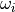
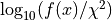
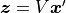
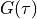

6. Output files¶
After computation is done, numerical results are stored in directory output.
6.1. List of files¶
output
├── spectrum.dat
├── pade.dat
├── lambda_dep.dat
├── find_lambda_opt.dat
├── SV.dat
├── lambda_opt
│ ├── iter.dat
│ ├── x_sv.dat
│ ├── x_tw.dat
│ ├── y_sv.dat
│ └── y_tw.dat
├── lambda
│ ├── lambda_1.00e+00
│ │ ├── iter.dat
│ │ ├── x_sv.dat
│ │ ├── x_tw.dat
│ │ ├── y_sv.dat
│ │ └── y_tw.dat
│ ├── lambda_1.58e+00
│ │ ├── ...
│ │ ├── ...
│ (for all values of lambda)
The four files just below the output directory summarize the results.
More detailed results for a given value lambda are stored in directory lambda_*
In particular, the directory lambda_opt is for the optimal values of lambda, and the other directories ending with numbers, e.g. lambda_1.00e+00, contain results for the specific value of lambda.
6.2. Details of each files¶
Each files stores list of real numbers separated with a white space. Some comments may be given at the header of files (lines beginning with ‘#’).
spectrum.dat
Real frequency spectrum
 for the optimal value of
for the optimal value of  . This is the final solution.
. This is the final solution.1st column: 
2nd column:
ex.) calculated results for fermion sample outputted as
samples/fermion/output/spectrum.dat.# lambda=1.585e-02 (l=19) -4.00000e+00 0.00000e+00 -3.99200e+00 0.00000e+00 -3.98400e+00 0.00000e+00 -3.97600e+00 0.00000e+00
spectrum.dat
Real frequency spectrum
calculated by the Pade approximant.1st column:
2nd column: from G(tau) in
filein_G.3rd column: The expectation value of over the generated
NSamplePadesamples with independent noise.4th column: The sample standard deviation of over the generated
NsamplePadesamples with independent noise.
lambda_dep.dat
Several quantities as a function of lambda.
1st column:
2nd column: Square error in the SV basis, (the first term in
 )
)3rd column: Square error computed in the original basis,
4th column: L0 norm of , (the number of non-zero components in )
5th column: L1 norm of , (the second term in
)6th column: not used
ex.) calculated results for fermion sample outputted as
samples/fermion/output/lambda_dep.dat.1.00000e+02 1.09110e-01 1.13080e-01 2 4.81361e-02 0.00000e+00 6.30957e+01 1.08854e-01 1.12824e-01 2 4.81376e-02 0.00000e+00 3.98107e+01 1.08752e-01 1.12722e-01 2 4.81386e-02 0.00000e+00 2.51189e+01 1.08710e-01 1.12679e-01 2 4.81394e-02 0.00000e+00 1.58489e+01 1.08609e-01 1.12578e-01 2 4.81459e-02 0.00000e+00
find_lambda_opt.dat
Auxiliary data that are used to determine the optimal value of lambda. See our original paper Phys. Rev. E 95, 061302(R) (2017) for details.
1st column:
2nd column: 
3rd column:
4th column:
ex.) calculated results for fermion sample outputted as
samples/fermion/output/find_lambda_opt.dat.# log(x) diff log(y) log(f(x)) [all in log10 scale] 2.00000e+00 1.92865e-16 -9.621340e-01 -9.621340e-01 1.80000e+00 -8.94525e-02 -9.631547e-01 -1.052607e+00 1.60000e+00 -1.79519e-01 -9.635618e-01 -1.143080e+00 1.40000e+00 -2.69822e-01 -9.637317e-01 -1.233554e+00
SV.dat
Singular values of the kernel .
1st column: index
 (starting from 0)
(starting from 0)2nd column: The singular value in descending order
ex.) calculated results for fermion sample outputted as
samples/fermion/output/SV.dat.0 1.07898e+02 1 9.75830e+01 2 6.93652e+01 3 5.27590e+01 4 3.57046e+01
iter.dat
Several quantities as a function of the iteration number. The 2nd–6th quantities should be small.
1st column: iteration (starting from 1)
2nd column:
3rd column: primary residual error for the constraint
4th column: dual residual error for the constraint ,
5th column: primary residual error for the constraint ,
6th column: dual residual error for the constraint ,
7th column: Square error in the SV basis (the quantity of 2nd column in lambda_dep.dat)
8th column: (the quantity of 4th column in lambda_dep.dat)
9th column: sum of spectrum,
10th column: negative weight in the spectrum
ex.) calculated results for fermion sample outputted as
samples/fermion/output/lambda_opt/iter.dat.# iter diff(x,x_old) res1_pri res1_dual res2_pri res2_dual RMSE L1_norm sum(x) negative_weight 1 3.854841e-03 2.119714e-03 1.369725e-04 5.289078e-04 4.523259e-04 5.618012e-05 9.396320e-02 1.000546e+00 3.481495e-03 2 2.399056e-03 1.526513e-03 3.273800e-05 4.131063e-04 6.433491e-04 5.652371e-05 9.203257e-02 1.000546e+00 2.717878e-03 3 2.166172e-03 1.024876e-03 1.232067e-05 4.091785e-04 6.751225e-04 5.686296e-05 9.031303e-02 1.000546e+00 3.234967e-03 4 1.425573e-03 8.163075e-04 4.198961e-06 3.879910e-04 4.450555e-04 5.711656e-05 8.963409e-02 1.000546e+00 3.396003e-03
x_sv.dat
spectrum in the SV basis (solution of the minimization problem)
1st column: The singular value index
2nd column:
3rd column: (must be sparse)
4th column:
ex.) calculated results for fermion sample outputted as
samples/fermion/output/lambda_opt/x_sv.dat.0 -4.61300e-02 -4.61300e-02 -4.61492e-02 1 1.14335e-06 0.00000e+00 -5.52982e-06 2 -6.65757e-03 -6.65757e-03 -6.69485e-03 3 -2.29934e-05 0.00000e+00 -1.16960e-05 4 -3.21754e-03 -3.21754e-03 -3.16677e-03
x_tw.dat
spectrum rho(omega) in the real-frequency domain
1st column:
2nd column:
3rd column: (final result for a given lambda when non-negativity is not imposed)
4th column: (final result for a given lambda when non-negativity is imposed)
ex.) calculated results for fermion sample outputted as
samples/fermion/output/lambda_opt/x_tw.dat.-4.00000e+00 8.98641e-04 3.95646e-03 0.00000e+00 -3.99200e+00 8.73662e-04 3.79795e-03 0.00000e+00 -3.98400e+00 8.41470e-04 3.64070e-03 0.00000e+00 -3.97600e+00 8.02778e-04 3.48473e-03 0.00000e+00 -3.96800e+00 7.58271e-04 3.33005e-03 0.00000e+00
y_sv.dat
input data transformed into the SV basis
1st column: The singular value index
2nd column: computed by
3rd column:
4th column:
ex.) calculated results for fermion sample outputted as
samples/fermion/output/lambda_opt/y_sv.dat.0 -4.97866e+00 -4.97734e+00 -4.97734e+00 1 1.16952e-04 1.11571e-04 0.00000e+00 2 -4.63728e-01 -4.61804e-01 -4.61804e-01 3 -1.28769e-03 -1.21311e-03 0.00000e+00 4 -1.13754e-01 -1.14881e-01 -1.14881e-01
y_tw.dat
input data  in the imaginary-time domain
1st column:

2nd column: (input data)
3rd column:
4th column:
ex.) calculated results for fermion sample outputted as
samples/fermion/output/lambda_opt/y_tw.dat.0.00000e+00 5.00734e-01 5.00687e-01 5.00294e-01 2.49938e-04 4.90130e-01 4.90315e-01 4.89958e-01 4.99875e-04 4.81350e-01 4.80277e-01 4.79953e-01 7.49813e-04 4.71476e-01 4.70561e-01 4.70268e-01 9.99750e-04 4.61762e-01 4.61154e-01 4.60890e-01
Gnuplot script files are given in the sample directory. In the
outputdirectory, typegnuplot path_to_SpM/samples/plt/*and in
lambda_*directory, typegnuplot path_to_SpM/samples/plt/lambda_fix/*